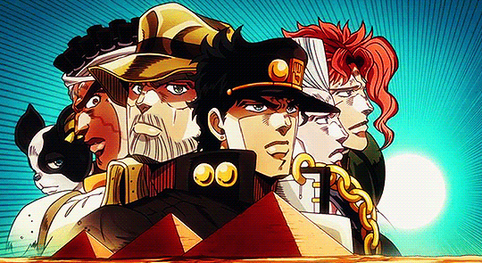

Welcome to the Pandemic Warriors Chronicles, a digital anthology where the epic tales of camaraderie, resilience, and the triumph of friendship unfold. Dive into the stories of Bitzan, the Virtual Sovereign, and his digital conquests, witness the whimsical narratives of Marcel, the Maestro of Mirth, and explore the enigma of Ducky, the Cryptic Phantom. Join Pompieru, the Compassionate Commander, in fostering a virtual family, and feel the tranquility of Tunoi, the Blissful Cloud Wanderer. Discover the harmonious fusion of virtual and physical prowess with Coamin, the Menace, and seek the sage advice of Ioni, the Rizz Master.
In the vast digital realms of MMORPGs, there exists a seasoned adventurer known as Bitzan. Hailing from the pixelated landscapes of countless virtual worlds, Bitzan found solace, excitement, and a true sense of camaraderie in the immersive realms of massively multiplayer online role-playing games. Bitzan, a seasoned gamer with a passion for MMORPGs, embarked on epic quests, battled formidable foes, and mastered the intricate mechanics of virtual worlds long before the world faced the challenges of the 2020 COVID-19 pandemic. However, as the pandemic cast its shadows, Bitzan sought refuge and connection in an unexpected place – the Discord server of the Pandemic Warriors. When the real world became uncertain and socially isolated, Bitzan joined this diverse group of gamers to form a digital brotherhood. His extensive knowledge of MMORPGs, honed through countless virtual battles and strategic triumphs, brought a unique dynamic to the Pandemic Warriors. Bitzan, with his unwavering determination and strategic prowess, became an integral part of the group, leading them through the intricate landscapes of virtual realms. Bitzan's character transcended the digital screen, bringing a vibrant energy and a wealth of gaming expertise to the Pandemic Warriors. As the group faced challenges, Bitzan shared his in-depth knowledge of MMORPG strategies, guiding fellow warriors through dungeons, raids, and epic battles. Beyond the gaming universe, Bitzan's vibrant personality and genuine camaraderie enriched the bonds within the Pandemic Warriors, transforming the Discord server into a haven for friendship and shared adventures. In the midst of the pandemic's uncertainty, Bitzan's virtual escapades with the Pandemic Warriors became a source of joy, laughter, and a reminder that even in the face of global upheaval, virtual connections could provide a respite. As the pandemic ebbed away, Bitzan's legacy endured within the Pandemic Warriors, a testament to the lasting impact of a gamer who not only conquered virtual challenges but also forged enduring friendships in the digital realm.
In the vast and often chaotic landscape of online gaming, one name echoed through the realms as the embodiment of mischief and merriment – Varutu, affectionately known as Trollu Trolli. Long before the pandemic gripped the world, Varutu reveled in the art of trolling, turning every gaming experience into a whimsical adventure filled with laughter and unpredictability. Varutu's gaming journey was never about the conventional path; it was a tapestry of pranks, clever antics, and an unyielding commitment to keeping things light-hearted. From classic multiplayer shooters to intricate MMORPGs, no game was safe from Varutu's mischievous touch. His in-game persona, Trollu Trolli, became synonymous with unpredictability, leaving a trail of laughter and bemusement wherever he ventured. When the pandemic enforced isolation and lockdowns, Varutu found himself yearning for more than just virtual chaos. It was during these times of uncertainty that he stumbled upon the Pandemic Warriors' Discord server. Drawn by the allure of a diverse gaming community, Varutu, with his penchant for mischief, embraced the chance to bring his unique brand of humor to the group. As Trollu Trolli joined the Pandemic Warriors, the server experienced a tidal wave of laughter and good-natured banter. Varutu's trolling antics, once a solo act, now became a collaborative effort, with the Pandemic Warriors finding joy in the unexpected twists he introduced to their gaming adventures. Whether it was disguising as in-game NPCs, organizing spontaneous events, or unleashing a series of amusing emotes, Trollu Trolli's antics brought a refreshing and much-needed dose of levity to the virtual battlefield. While Varutu's love for trolling remained steadfast, the Pandemic Warriors discovered the heartwarming side of his personality. Beneath the mischievous facade was a friend whose laughter was infectious, a companion who, even in the realm of pranks, valued the bonds forged during their shared virtual escapades. As the pandemic's grip slowly loosened, Varutu's legacy endured within the Pandemic Warriors, a testament to the transformative power of laughter and camaraderie even in the most challenging times. Trollu Trolli, once the master of mischief, became an indispensable part of a gaming family that found strength, support, and enduring joy in the face of global adversity.
In the hallowed halls of the Pandemic Warriors' Discord server, there stood a figure of legendary proportions – Pompieru, the illustrious founder, compassionate confidant, and perhaps, by night, the caped crusader himself. Long before the pandemic cast its gloom, Pompieru laid the foundation for a digital haven that transcended gaming, embodying the spirit of camaraderie, empathy, and a touch of mystery. As the visionary founder, Pompieru's leadership extended beyond strategic game plans. He became the virtual shoulder to lean on, a compassionate ear in times of triumphs and tribulations. A sensitive soul, Pompieru had an uncanny ability to listen to the problems of others, offering support and guidance that went beyond the pixels on the screen. But wait, there was more to Pompieru than met the eye. Beneath the surface of the Discord server's digital glow, rumors whispered of a dual life, a secret identity known to only a select few. Could it be? Was Pompieru, the founder and empathetic leader, moonlighting as none other than the Dark Knight himself? Fueling the mystery was Pompieru's other passion – first-person shooter (FPS) games. A virtuoso on the virtual battlefield, he showcased a level of skill that bordered on the legendary. His prowess in FPS games not only struck awe into the hearts of opponents but added a layer of excitement to the Pandemic Warriors' gaming escapades. And then, there were the whispers of the night. Some claimed to have seen a silhouette in the darkness, a figure reminiscent of the famed Gotham guardian. Could Pompieru, with his strategic mind and combat skills, be leading a double life as the elusive Batman? As the world emerged from the pandemic's grip, Pompieru's legacy endured within the Pandemic Warriors. His role as the empathetic founder, skilled FPS maestro, and potential nighttime vigilante became the stuff of legends, whispered about in the digital corners of the server. Pompieru, the man who not only founded a gaming community but may very well have patrolled the virtual and real streets alike, exemplified the extraordinary tales that unfolded in the ever-evolving saga of the Pandemic Warriors.
In the vast and dynamic landscape of online gaming, there emerged a figure whose wisdom extended far beyond the realms of virtual battles and quests – Ioni, affectionately known as Rizz Master. As the world grappled with the uncertainties of the 2020 pandemic, Ioni brought not just gaming expertise but a profound understanding of relationships and the intricacies of the real world. Ioni's journey in the Pandemic Warriors' Discord server was marked by more than strategic insights for in-game challenges. Armed with a wealth of life experience and a genuine desire to connect, he assumed the role of the group's wise sage, offering invaluable advice on relationships and navigating the complexities of the world outside the digital realm. Before the pandemic, Ioni had already garnered a reputation for being a compassionate listener and an astute observer of human nature. His real-world wisdom became a beacon of light for the Pandemic Warriors as they faced the isolating effects of lockdowns and social distancing. Whether it was navigating the nuances of friendships, offering support during tough times, or sharing perspectives on love and relationships, Rizz Master's advice was a cornerstone of the group's strength. The virtual haven of the Pandemic Warriors transformed into more than just a gaming community – it became a space where members sought Ioni's guidance not only for raid strategies but also for matters of the heart and the challenges of the real world. His words resonated with empathy and understanding, creating an environment where genuine connections and support flourished. As the pandemic began to wane, Ioni's legacy within the Pandemic Warriors remained indelible. The group had not just weathered digital storms together; they had also grown stronger through the wisdom and kindness imparted by Rizz Master. The lessons in love and life became an integral part of the Pandemic Warriors' narrative, proving that even in the virtual realm, the impact of a compassionate and wise friend transcends the pixels on the screen. In the midst of the Pandemic Warriors' digital odyssey, Ioni, known as Rizz Master, emerged as not just a sage advisor but a beacon of wisdom that extended beyond the gaming realm. Beyond the virtual battles, Ioni became the oracle of relationships, offering insights into the intricacies of the real world.
In the vast and competitive realm of online gaming, there emerged a player whose life became intertwined with the strategic intricacies of one particular title – Radu, affectionately known as LoL Teacher. Long before the world faced the challenges of the 2020 pandemic, Radu's existence revolved around the virtual battlegrounds of League of Legends, where he earned a reputation not just as a player but as a dedicated teacher of the game. League of Legends wasn't merely a pastime for Radu; it was a passion that shaped his virtual identity. So devoted was he to the Summoner's Rift that fellow gamers bestowed upon him the moniker "LoL Teacher." Radu's mastery of the game extended beyond individual skill; it manifested in his ability to guide others, sharing strategies, tips, and insights that elevated the gameplay of those around him. When the pandemic forced the world into isolation, Radu found a new battlefield – the Pandemic Warriors' Discord server. Drawn by the prospect of a diverse gaming community and eager minds hungry for knowledge, LoL Teacher seamlessly integrated into the group, bringing with him not just a wealth of League of Legends expertise but a genuine enthusiasm for sharing the joy of the game. Within the Pandemic Warriors, Radu's impact went beyond the digital arena. He became the go-to source for mastering champions, optimizing builds, and dissecting complex team strategies. As the group faced the challenges of the pandemic, Radu's guidance provided not only an escape into the competitive world of League of Legends but also a sense of achievement and growth for his fellow warriors. The Pandemic Warriors, once a diverse group brought together by shared challenges, now found unity in their pursuit of excellence on the virtual battlegrounds, guided by the teachings of LoL Teacher. Radu's dedication and passion for League of Legends had not only defined his own life but had also become a source of inspiration for a community seeking purpose and connection in the face of adversity. As the world slowly recovered, Radu's legacy within the Pandemic Warriors stood as a testament to the transformative power of shared passions and the profound impact one dedicated gamer could have on a group's collective experience. LoL Teacher had not just imparted knowledge; he had fostered a sense of camaraderie, turning the Pandemic Warriors into a formidable force both in-game and in the journey of life.
In the eclectic tapestry of the Pandemic Warriors' Discord server, one figure stood out as the unrivaled maestro of laughter and imaginative tales – Marcel, affectionately referred to as Black One. Long before the pandemic painted the world with uncertainty, Marcel's life was a canvas adorned with whimsical stories, clever fabrications, and an unparalleled knack for turning the ordinary into the extraordinary. Marcel's unique charm lay in his ability to craft narratives that transported the Pandemic Warriors to fantastical realms. The mundane became magical under the spell of his inventive storytelling, and every casual conversation transformed into a theatrical experience. His tales were often a blend of absurdity and hilarity, leaving the group both bewildered and bursting with laughter. When the pandemic introduced a new level of isolation, Marcel found his comedic haven within the Pandemic Warriors. Joining the Discord server with a flourish of imaginative flair, he quickly became the Black One, a title that encapsulated his penchant for weaving narratives darker than the night sky and humor as vibrant as the brightest stars. Within the group, Marcel's stories became legendary. From fantastical exploits in virtual worlds to seemingly unbelievable real-life escapades, he spun a web of tales that kept everyone on the edge of their seats, questioning reality and relishing in the sheer joy of his entertaining fabrications. The Pandemic Warriors found respite in Marcel's whimsy, a much-needed escape from the challenges of the outside world. As the pandemic unfolded, Black One's presence became a cornerstone of the Pandemic Warriors' camaraderie. Marcel's laughter-inducing lies served as a tonic for the group, providing not only entertainment but also fostering a sense of togetherness in the face of adversity. The Discord server echoed with the mirthful sounds of Marcel's storytelling, a soundtrack that defined the Pandemic Warriors' virtual journey. As the world began to heal, Marcel's legacy endured within the Pandemic Warriors. The tales of the Black One became a cherished part of the group's narrative, a reminder that even in the darkest times, laughter and creativity could illuminate the path forward. The Pandemic Warriors, once united by shared challenges, now carried with them the joyful imprint of Marcel's imaginative spirit, forever etched into the digital annals of their collective adventures.
In the ethereal expanse of the Pandemic Warriors' Discord server, there existed a laid-back soul who moved through virtual realms with a cloud of tranquility following his every step – Tunoi, affectionately recognized as The Stoner. Long before the pandemic cast its shadow, Tunoi found solace in the gentle embrace of zaza, transforming his virtual adventures into blissful odysseys. The Stoner's presence within the Pandemic Warriors was marked by a perpetual haze of calmness. His journey through the digital landscapes was accompanied by the subtle scent of zaza, an aromatic companion that elevated not just his own experience but also added a unique flavor to the collective atmosphere of the group. Tunoi, while chill most of the time, revealed another facet of his gaming persona during intense battles. As the digital battlegrounds heated up, The Stoner transformed into a force of fiery determination. His calm demeanor gave way to passionate outbursts, and the tranquil cloud surrounding him occasionally erupted into a tempest of gaming rage. In the midst of epic quests or heated multiplayer matches, Tunoi's fiery gaming persona emerged. The Stoner's laughter and laid-back nature persisted, but when the pixels on the screen bore witness to fierce conflicts, a more animated side of Tunoi emerged. The Stoner's occasional outbursts became legendary within the Pandemic Warriors, adding an unexpected element to the group's virtual escapades. As the world grappled with uncertainties, Tunoi's presence became a reminder that even in the virtual realms, one could find a balance between tranquility and the adrenaline of intense battles. The Stoner, with his perpetual smile and easygoing nature, became an integral part of the Pandemic Warriors, offering a different kind of strength – the strength to find peace, joy, and even a bit of gaming fury in the shared adventure. As the echoes of the pandemic faded, Tunoi's legacy endured within the Pandemic Warriors. The laid-back spirit of The Stoner, coupled with the bursts of gaming passion, had left an indelible mark on the group, a testament to the idea that even in the virtual landscape, the blissful cloud wanderer could bring a sense of peace, laughter, and the occasional gaming storm to those who embarked on the journey together.
In the dynamic tapestry of the Pandemic Warriors' Discord server, there existed a force that seamlessly blended the realms of virtual and physical prowess – Coamin, known far and wide as The Menace. Even before the pandemic cast its shadows, Coamin's life was a thrilling fusion of gaming mastery, athletic prowess, and an unmistakable talent for hand-to-hand combat. Coamin's journey within the Pandemic Warriors wasn't just about conquering virtual foes; it was about bringing the spirit of a true warrior to every facet of life. A lover of gaming, sports, and a master of fighting arts such as kickboxing, The Menace embodied the harmony between the digital and physical realms, proving that strength and skill transcended the boundaries of screens and arenas. When the pandemic ushered in a new era of isolation, Coamin found himself drawn to the Pandemic Warriors' Discord server. Here, he shared his passion for gaming, regaling the group with tales of virtual victories and, on occasion, real-life adventures that showcased his formidable skills in combat sports. The Menace quickly became a beacon of inspiration for the group, embodying the idea that a warrior's spirit could thrive in both pixels and punches. Coamin's multifaceted persona added a dynamic layer to the Pandemic Warriors. Whether discussing gaming strategies, sharing stories of intense sports competitions, or offering insights into the discipline of kickboxing, The Menace brought a well-rounded energy that resonated with every member of the group. As the pandemic unfolded, Coamin's presence became a symbol of strength and resilience. The Menace not only conquered digital realms with finesse but also faced the challenges of the outside world with a warrior's determination. The Pandemic Warriors found inspiration in Coamin's unwavering commitment to excellence, both in the gaming arena and the arena of life. As the world slowly recovered, Coamin's legacy endured within the Pandemic Warriors. The Menace, with his passion for gaming, love for sports, and prowess in kickboxing, had left an indelible mark on the group, showcasing that a true warrior's spirit transcends the boundaries of screens and extends into the shared journey of both virtual and physical realms.
In the enigmatic realm of the Pandemic Warriors' Discord server, a mysterious figure emerged, known only as Ducky. A true enigma, Ducky materialized from the digital shadows, joining the group sporadically and leaving behind a trail of perplexed gamers. His presence, shrouded in mystery, brought a unique blend of intrigue and uncertainty to the virtual haven. Ducky's distinctiveness lay not only in his sporadic appearances but also in his uncanny ability to dominate the virtual landscape, especially in games like Among Us. When he did emerge, the group found themselves at the mercy of an unparalleled force – Ducky, the master of enigmatic victories who seemed to defy the rules of the game. Among Us, a realm where trust and deception intertwined, became Ducky's mysterious playground. His gameplay transcended the ordinary, leaving the Pandemic Warriors in awe and confusion as he outwitted and outplayed everyone using tactics that seemed almost otherworldly. A phantom in the digital arena, Ducky's motives and methods remained hidden behind a veil of secrecy. While the details of Ducky's real-life identity remained a puzzle, his impact on the Pandemic Warriors extended beyond mere gameplay. Despite the cryptic nature of his persona, Ducky showcased an unexpected benevolence by boosting the server each month, adding an intriguing layer to his mysterious character. Even today, the server receives this boost, a silent nod from the enigmatic benefactor. The Pandemic Warriors, caught between admiration and curiosity, continue to navigate the digital realms, occasionally wondering when the mysterious Ducky might reappear. His presence, though sporadic, has become a symbol of the unpredictable nature of online adventures, leaving the group both baffled and grateful for the boosts that arrive like cryptic gifts from the shadows. As the world moves forward, Ducky remains a puzzling legend within the Pandemic Warriors, a phantom who, even in his elusive presence, has left an indelible mark on the group's collective experience. The enigma of Ducky persists, a tale of mystery, intrigue, and unexpected generosity in the ever-evolving saga of the Pandemic Warriors.